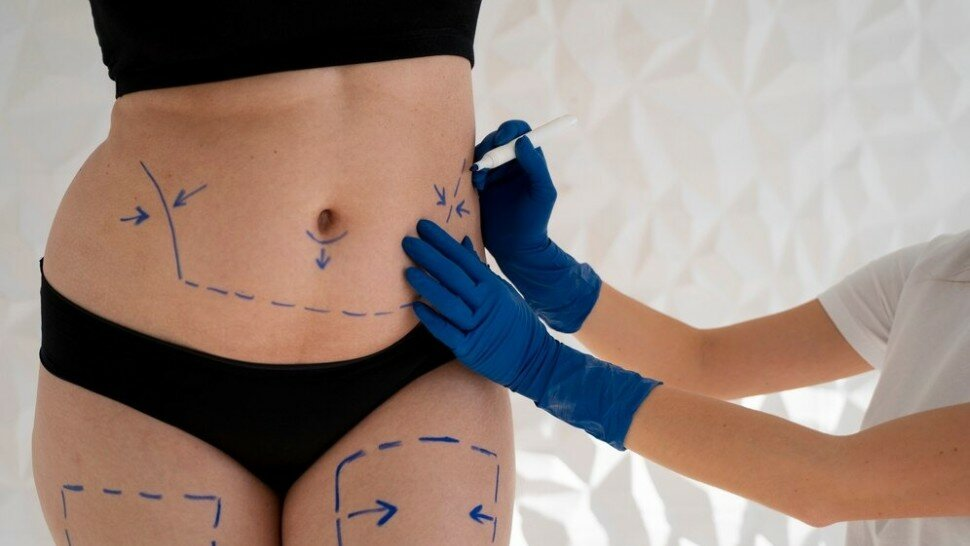

Contour, Kilos et Santé : Évaluer l'Impact de la Liposuccion et de la Chirurgie Bariatrique

Dans le contexte actuel où la préoccupation pour le physique occupe une place centrale, la liposuccion et la chirurgie bariatrique se présentent comme des solutions privilégiées pour de nombreuses personnes désireuses d'améliorer leur apparence et leur santé[1]. La liposuccion, technique chirurgicale visant à remodeler certaines parties du corps par l'aspiration de graisse, se distingue comme une procédure esthétique majeure pour affiner la silhouette[2]. Parallèlement, la chirurgie bariatrique, reconnue pour ses effets bénéfiques sur la perte de poids significative et durable, offre une avenue thérapeutique cruciale pour les patients atteints d'obésité morbide, améliorant ainsi leurs conditions de vie et réduisant les risques de maladies chroniques associées à l'obésité[3].
Cet article s'efforce d'explorer en profondeur les implications de ces interventions, non seulement en termes de résultats esthétiques, mais également concernant leur impact sur la santé globale des patients. Des études récentes soulignent que, malgré les avantages indéniables, ces procédures ne sont pas exemptes de risques et nécessitent une sélection minutieuse des candidats, ainsi qu'un suivi post-opératoire rigoureux pour optimiser les résultats et minimiser les complications[4]. De plus, la dimension psychologique associée à ces chirurgies, incluant les attentes des patients et l'évolution de leur perception corporelle post-intervention, joue un rôle crucial dans l'appréciation des bénéfices à long terme de ces procédures[5].

La Liposuccion : Définition et Objectifs

Qu'est-ce que la Liposuccion ?
La liposuccion, également connue sous le nom de lipoplastie, est une intervention chirurgicale esthétique qui vise à éliminer les dépôts de graisse de certaines zones du corps, comme l'abdomen, les hanches, les fesses, les cuisses, les genoux, le haut des bras, le dos, et parfois le visage et le cou. Cette technique permet de remodeler ces zones selon les désirs du patient. La liposuccion n'est pas une méthode de perte de poids en soi, mais plutôt une procédure de remodelage corporel destinée aux personnes qui ont des dépôts de graisse difficiles à éliminer malgré une alimentation équilibrée et une activité physique régulière[2].
Objectifs de la Liposuccion
-
Amélioration esthétique
L'objectif principal de la liposuccion est d'améliorer l'aspect esthétique du corps en supprimant les graisses localisées qui ne répondent pas aux méthodes traditionnelles de perte de poids. Elle est conçue pour sculpter le corps et améliorer ses contours, offrant ainsi au patient une silhouette plus harmonieuse et proportionnée[6]. -
Impacts psychologiques positifs
En plus de ses avantages esthétiques, la liposuccion peut avoir des effets psychologiques positifs significatifs. Les patients rapportent souvent une augmentation de l'estime de soi et du bien-être après l'intervention, grâce à l'amélioration de leur apparence physique[7].